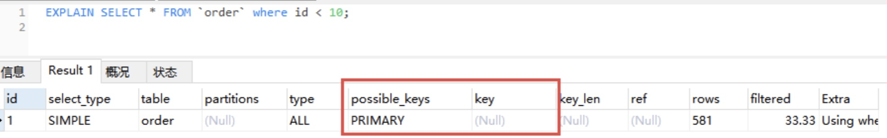
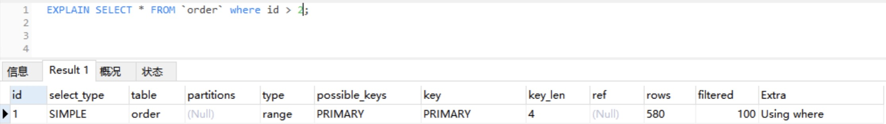
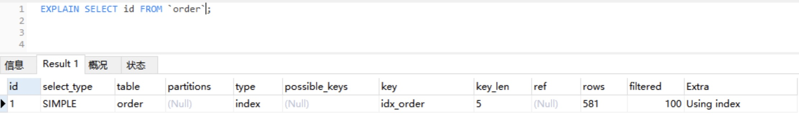
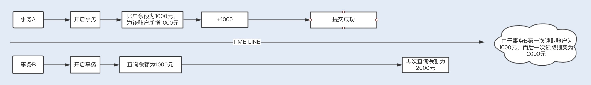

Java性能调优5
1.如何写出高性能SQL语句
我们知道，应用服务与数据库的交互主要是通过 SQL 语句来实现的。在开发初期，我们更加关注的是使用 SQL 实现业务功能，然而系统上线后，随着生产环境数据的快速增长，之前写的很多 SQL 语句就开始暴露出性能问题。
在这个阶段中，我们应该尽量避免一些慢 SQL 语句的实现。但话说回来，SQL 语句慢的原因千千万，除了一些常规的慢 SQL 语句可以直接规避，其它的一味去规避也不是办法，我们还要学会如何去分析、定位到其根本原因，并总结一些常用的 SQL 调优方法，以备不时之需。
那么今天我们就重点看看慢 SQL 语句的几种常见诱因，从这点出发，找到最佳方法，开启高性能 SQL 语句的大门。
1.1 慢 SQL 语句的几种常见诱因
- 无索引、索引失效导致慢查询
如果在一张几千万数据的表中以一个没有索引的列作为查询条件，大部分情况下查询会非常耗时，这种查询毫无疑问是一个慢 SQL 查询。所以对于大数据量的查询，我们需要建立适合的索引来优化查询。
虽然我们很多时候建立了索引，但在一些特定的场景下，索引还有可能会失效，所以索引失效也是导致慢查询的主要原因之一
- 锁等待
我们常用的存储引擎有 InnoDB 和 MyISAM，前者支持行锁和表锁，后者只支持表锁。
如果数据库操作是基于表锁实现的，试想下，如果一张订单表在更新时，需要锁住整张表，那么其它大量数据库操作（包括查询）都将处于等待状态，这将严重影响到系统的并发性能。
这时，InnoDB 存储引擎支持的行锁更适合高并发场景。但在使用 InnoDB 存储引擎时，我们要特别注意行锁升级为表锁的可能。在批量更新操作时，行锁就很可能会升级为表锁。
MySQL 认为如果对一张表使用大量行锁，会导致事务执行效率下降，从而可能造成其它事务长时间锁等待和更多的锁冲突问题发生，致使性能严重下降，所以 MySQL 会将行锁升级为表锁。还有，行锁是基于索引加的锁，如果我们在更新操作时，条件索引失效，那么行锁也会升级为表锁。
因此，基于表锁的数据库操作，会导致 SQL 阻塞等待，从而影响执行速度。在一些更新操作（insert\update\delete）大于或等于读操作的情况下，MySQL 不建议使用 MyISAM 存储引擎。
除了锁升级之外，行锁相对表锁来说，虽然粒度更细，并发能力提升了，但也带来了新的问题，那就是死锁。因此，在使用行锁时，我们要注意避免死锁。
- 不恰当的 SQL 语句 使用不恰当的 SQL 语句也是慢 SQL 最常见的诱因之一。例如，习惯使用 <SELECT >，<SELECT COUNT()> SQL 语句，在大数据表中使用 <LIMIT M,N> 分页查询，以及对非索引字段进行排序等等。
1.2 优化 SQL 语句的步骤
通常，我们在执行一条 SQL 语句时，要想知道这个 SQL 先后查询了哪些表，是否使用了索引，这些数据从哪里获取到，获取到数据遍历了多少行数据等等，我们可以通过 EXPLAIN 命令来查看这些执行信息。这些执行信息被统称为执行计划。
- 通过 EXPLAIN 分析 SQL 执行计划
假设现在我们使用 EXPLAIN 命令查看当前 SQL 是否使用了索引，先通过 SQL EXPLAIN 导出相应的执行计划如下： 
{kind=link}
下面对图示中的每一个字段进行一个说明，从中你也能收获到很多零散的知识点。
- id：每个执行计划都有一个 id，如果是一个联合查询，这里还将有多个 id。
- select_type：表示 SELECT 查询类型，常见的有 SIMPLE（普通查询，即没有联合查询、子查询）、PRIMARY（主查询）、UNION（UNION 中后面的查询）、SUBQUERY（子查询）等。
- table：当前执行计划查询的表，如果给表起别名了，则显示别名信息。
- partitions：访问的分区表信息。
- type：表示从表中查询到行所执行的方式，查询方式是 SQL 优化中一个很重要的指标，结果值从好到差依次是：system > const > eq_ref > ref > range > index > ALL。
{kind=link}
- system/const：表中只有一行数据匹配，此时根据索引查询一次就能找到对应的数据。如果是 B + 树索引，我们知道此时索引构造成了多个层级的树，当查询的索引在树的底层时，查询效率就越低。const 表示此时索引在第一层，只需访问一层便能得到数据。
{kind=link}
- eq_ref：使用唯一索引扫描，常见于多表连接中使用主键和唯一索引作为关联条件。
{kind=link}
- ref：非唯一索引扫描，还可见于唯一索引最左原则匹配扫描。 
{kind=link}
range：索引范围扫描，比如，<，>，between 等操作。  index：索引全表扫描，此时遍历整个索引树。
{kind=link}
{kind=link}
- ALL：表示全表扫描，需要遍历全表来找到对应的行。
- possible_keys：可能使用到的索引。
- key：实际使用到的索引。
- key_len：当前使用的索引的长度。
- ref：关联 id 等信息。
- rows：查找到记录所扫描的行数。
- filtered：查找到所需记录占总扫描记录数的比例。
- Extra：额外的信息。
- 通过 Show Profile 分析 SQL 执行性能
上述通过 EXPLAIN 分析执行计划，仅仅是停留在分析 SQL 的外部的执行情况，如果我们想要深入到 MySQL 内核中，从执行线程的状态和时间来分析的话，这个时候我们就可以选择 Profile。
Profile 除了可以分析执行线程的状态和时间，还支持进一步选择 ALL、CPU、MEMORY、BLOCK IO、CONTEXT SWITCHES 等类型来查询 SQL 语句在不同系统资源上所消耗的时间。以下是相关命令的注释：
|
|
Show Profiles 只显示最近发给服务器的 SQL 语句，默认情况下是记录最近已执行的 15 条记录，我们可以重新设置 profiling_history_size 增大该存储记录，最大值为 100。
1.3 常用的 SQL 优化
在使用一些常规的 SQL 时，如果我们通过一些方法和技巧来优化这些 SQL 的实现，在性能上就会比使用常规通用的实现方式更加优越，甚至可以将 SQL 语句的性能提升到另一个数量级。
- 优化分页查询
通常我们是使用 <LIMIT M,N> + 合适的 order by 来实现分页查询，这种实现方式在没有任何索引条件支持的情况下，需要做大量的文件排序操作（file sort），性能将会非常得糟糕。如果有对应的索引，通常刚开始的分页查询效率会比较理想，但越往后，分页查询的性能就越差。
这是因为我们在使用 LIMIT 的时候，偏移量 M 在分页越靠后的时候，值就越大，数据库检索的数据也就越多。例如 LIMIT 10000,10 这样的查询，数据库需要查询 10010 条记录，最后返回 10 条记录。也就是说将会有 10000 条记录被查询出来没有被使用到。
利用子查询优化分页查询
以上分页查询的问题在于，我们查询获取的 10020 行数据结果都返回给我们了，我们能否先查询出所需要的 20 行数据中的最小 ID 值，然后通过偏移量返回所需要的 20 行数据给我们呢？我们可以通过索引覆盖扫描，使用子查询的方式来实现分页查询：
|
|
通过 EXPLAIN 分析可知：子查询遍历索引的范围跟上一个查询差不多，而主查询扫描了更多的行数，但执行时间却减少了，只有 0.004s。这就是因为返回行数只有 20 行了，执行效率得到了明显的提升。
{kind=link}
{kind=link}
- 优化 SELECT COUNT(*)
COUNT() 是一个聚合函数，主要用来统计行数，有时候也用来统计某一列的行数量（不统计 NULL 值的行）。我们平时最常用的就是 COUNT(*) 和 COUNT(1) 这两种方式了，其实两者没有明显的区别，在拥有主键的情况下，它们都是利用主键列实现了行数的统计。
但 COUNT() 函数在 MyISAM 和 InnoDB 存储引擎所执行的原理是不一样的，通常在没有任何查询条件下的 COUNT(*)，MyISAM 的查询速度要明显快于 InnoDB。
这是因为 MyISAM 存储引擎记录的是整个表的行数，在 COUNT(*) 查询操作时无需遍历表计算，直接获取该值即可。而在 InnoDB 存储引擎中就需要扫描表来统计具体的行数。而当带上 where 条件语句之后，MyISAM 跟 InnoDB 就没有区别了，它们都需要扫描表来进行行数的统计。
如果对一张大表经常做 SELECT COUNT(*) 操作，这肯定是不明智的。那么我们该如何对大表的 COUNT() 进行优化呢？
- 使用近似值
有时候某些业务场景并不需要返回一个精确的 COUNT 值，此时我们可以使用近似值来代替。我们可以使用 EXPLAIN 对表进行估算，要知道，执行 EXPLAIN 并不会真正去执行查询，而是返回一个估算的近似值。
- 增加汇总统计
如果需要一个精确的 COUNT 值，我们可以额外新增一个汇总统计表或者缓存字段来统计需要的 COUNT 值，这种方式在新增和删除时有一定的成本，但却可以大大提升 COUNT() 的性能。
- 优化 SELECT *
我曾经看过很多同事习惯在只查询一两个字段时，都使用 select * from table where xxx 这样的 SQL 语句，这种写法在特定的环境下会存在一定的性能损耗。
MySQL 常用的存储引擎有 MyISAM 和 InnoDB，其中 InnoDB 在默认创建主键时会创建主键索引，而主键索引属于聚族索引，即在存储数据时，索引是基于 B + 树构成的，具体的行数据则存储在叶子节点。
而 MyISAM 默认创建的主键索引、二级索引以及 InnoDB 的二级索引都属于非聚族索引，即在存储数据时，索引是基于 B + 树构成的，而叶子节点存储的是主键值。
假设我们的订单表是基于 InnoDB 存储引擎创建的，且存在 order_no、status 两列组成的组合索引。此时，我们需要根据订单号查询一张订单表的 status，如果我们使用 select * from order where order_no='xxx’来查询，则先会查询组合索引，通过组合索引获取到主键 ID，再通过主键 ID 去主键索引中获取对应行所有列的值。
如果我们使用 select order_no, status from order where order_no='xxx’来查询，则只会查询组合索引，通过组合索引获取到对应的 order_no 和 status 的值。
2. 高并发场景下的数据库事务调优
数据库事务是数据库系统执行过程中的一个逻辑处理单元，保证一个数据库操作要么成功，要么失败。谈到他，就不得不提 ACID 属性了。数据库事务具有以下四个基本属性：原子性（Atomicity）、一致性（Consistent）、隔离性（Isolation）以及持久性（Durable）。正是这些特性，才保证了数据库事务的安全性。而在 MySQL 中，鉴于 MyISAM 存储引擎不支持事务，所以接下来的内容都是在 InnoDB 存储引擎的基础上进行讲解的。
我们知道，在 Java 并发编程中，可以多线程并发执行程序，然而并发虽然提高了程序的执行效率，却给程序带来了线程安全问题。事务跟多线程一样，为了提高数据库处理事务的吞吐量，数据库同样支持并发事务，而在并发运行中，同样也存在着安全性问题，例如，修改数据丢失，读取数据不一致等。
在数据库事务中，事务的隔离是解决并发事务问题的关键， 今天我们就重点了解下事务隔离的实现原理，以及如何优化事务隔离带来的性能问题。
2.1 并发事务带来的问题
我们可以通过以下几个例子来了解下并发事务带来的几个问题：
{kind=link}
{kind=link}
 4. 幻读
{kind=link}
{kind=link}
2.2 事务隔离解决并发问题
以上 4 个并发事务带来的问题，其中，数据丢失可以基于数据库中的悲观锁来避免发生，即在查询时通过在事务中使用 select xx for update 语句来实现一个排他锁，保证在该事务结束之前其他事务无法更新该数据。
当然，我们也可以基于乐观锁来避免，即将某一字段作为版本号，如果更新时的版本号跟之前的版本一致，则更新，否则更新失败。剩下 3 个问题，其实是数据库读一致性造成的，需要数据库提供一定的事务隔离机制来解决。
我们通过加锁的方式，可以实现不同的事务隔离机制。在了解事务隔离机制之前，我们不妨先来了解下 MySQL 都有哪些锁机制。
InnoDB 实现了两种类型的锁机制：共享锁（S）和排他锁（X）。共享锁允许一个事务读数据，不允许修改数据，如果其他事务要再对该行加锁，只能加共享锁；排他锁是修改数据时加的锁，可以读取和修改数据，一旦一个事务对该行数据加锁，其他事务将不能再对该数据加任务锁。
熟悉了以上 InnoDB 行锁的实现原理，我们就可以更清楚地理解下面的内容。
在操作数据的事务中，不同的锁机制会产生以下几种不同的事务隔离级别，不同的隔离级别分别可以解决并发事务产生的几个问题，对应如下：
未提交读（Read Uncommitted）：在事务 A 读取数据时，事务 B 读取和修改数据加了共享锁。这种隔离级别，会导致脏读、不可重复读以及幻读。
已提交读（Read Committed）：在事务 A 读取数据时增加了共享锁，一旦读取，立即释放锁，事务 B 读取修改数据时增加了行级排他锁，直到事务结束才释放锁。也就是说，事务 A 在读取数据时，事务 B 只能读取数据，不能修改。当事务 A 读取到数据后，事务 B 才能修改。这种隔离级别，可以避免脏读，但依然存在不可重复读以及幻读的问题。
可重复读（Repeatable Read）：在事务 A 读取数据时增加了共享锁，事务结束，才释放锁，事务 B 读取修改数据时增加了行级排他锁，直到事务结束才释放锁。也就是说，事务 A 在没有结束事务时，事务 B 只能读取数据，不能修改。当事务 A 结束事务，事务 B 才能修改。这种隔离级别，可以避免脏读、不可重复读，但依然存在幻读的问题。
可序列化（Serializable）：在事务 A 读取数据时增加了共享锁，事务结束，才释放锁，事务 B 读取修改数据时增加了表级排他锁，直到事务结束才释放锁。可序列化解决了脏读、不可重复读、幻读等问题，但隔离级别越来越高的同时，并发性会越来越低。
InnoDB 中的 RC 和 RR 隔离事务是基于多版本并发控制（MVVC）实现高性能事务。一旦数据被加上排他锁，其他事务将无法加入共享锁，且处于阻塞等待状态，如果一张表有大量的请求，这样的性能将是无法支持的。
MVVC 对普通的 Select 不加锁，如果读取的数据正在执行 Delete 或 Update 操作，这时读取操作不会等待排它锁的释放，而是直接利用 MVVC 读取该行的数据快照（数据快照是指在该行的之前版本的数据，而数据快照的版本是基于 undo 实现的，undo 是用来做事务回滚的，记录了回滚的不同版本的行记录）。MVVC 避免了对数据重复加锁的过程，大大提高了读操作的性能。
2.3 锁具体实现算法
我们知道，InnoDB 既实现了行锁，也实现了表锁。行锁是通过索引实现的，如果不通过索引条件检索数据，那么 InnoDB 将对表中所有的记录进行加锁，其实就是升级为表锁了。
行锁的具体实现算法有三种：record lock、gap lock 以及 next-key lock。record lock 是专门对索引项加锁；gap lock 是对索引项之间的间隙加锁；next-key lock 则是前面两种的组合，对索引项以其之间的间隙加锁。
只在可重复读或以上隔离级别下的特定操作才会取得 gap lock 或 next-key lock，在 Select 、Update 和 Delete 时，除了基于唯一索引的查询之外，其他索引查询时都会获取 gap lock 或 next-key lock，即锁住其扫描的范围。
2.4 优化高并发事务
通过以上讲解，相信你对事务、锁以及隔离级别已经有了一个透彻的了解了。清楚了问题，我们就可以聊聊高并发场景下的事务到底该如何调优了。
- 结合业务场景，使用低级别事务隔离 在高并发业务中，为了保证业务数据的一致性，操作数据库时往往会使用到不同级别的事务隔离。隔离级别越高，并发性能就越低。
那换到业务场景中，我们如何判断用哪种隔离级别更合适呢？我们可以通过两个简单的业务来说下其中的选择方法。
我们在修改用户最后登录时间的业务场景中，这里对查询用户的登录时间没有特别严格的准确性要求，而修改用户登录信息只有用户自己登录时才会修改，不存在一个事务提交的信息被覆盖的可能。所以我们允许该业务使用最低隔离级别。
而如果是账户中的余额或积分的消费，就存在多个客户端同时消费一个账户的情况，此时我们应该选择 RR 级别来保证一旦有一个客户端在对账户进行消费，其他客户端就不可能对该账户同时进行消费了。
-
避免行锁升级表锁 前面讲了，在 InnoDB 中，行锁是通过索引实现的，如果不通过索引条件检索数据，行锁将会升级到表锁。我们知道，表锁是会严重影响到整张表的操作性能的，所以我们应该避免他。
-
控制事务的大小，减少锁定的资源量和锁定时间长度 你是否遇到过以下 SQL 异常呢？在抢购系统的日志中，在活动区间，我们经常可以看到这种异常日志：
|
|
由于在抢购提交订单中开启了事务，在高并发时对一条记录进行更新的情况下，由于更新记录所在的事务还可能存在其他操作，导致一个事务比较长，当有大量请求进入时，就可能导致一些请求同时进入到事务中。
又因为锁的竞争是不公平的，当多个事务同时对一条记录进行更新时，极端情况下，一个更新操作进去排队系统后，可能会一直拿不到锁，最后因超时被系统打断踢出。
在用户购买商品时，首先我们需要查询库存余额，再新建一个订单，并扣除相应的库存。这一系列操作是处于同一个事务的。
以上业务若是在两种不同的执行顺序下，其结果都是一样的，但在事务性能方面却不一样：
{kind=link}
这是因为，虽然这些操作在同一个事务，但锁的申请在不同时间，只有当其他操作都执行完，才会释放所有锁。因为扣除库存是更新操作，属于行锁，这将会影响到其他操作该数据的事务，所以我们应该尽量避免长时间地持有该锁，尽快释放该锁。
又因为先新建订单和先扣除库存都不会影响业务，所以我们可以将扣除库存操作放到最后，也就是使用执行顺序 1，以此尽量减小锁的持有时间。
3. 索引的失效与优化
不知道你是否跟我有过同样的经历，那就是作为一个开发工程师，经常被 DBA 叫过去“批评”，而最常见的就是申请创建新的索引或发现慢 SQL 日志了。
记得之前有一次迭代一个业务模块的开发，涉及到了一个新的查询业务，需要根据商品类型、订单状态筛选出需要的订单，并以订单时间进行排序。由于 sku 的索引已经存在了，我在完成业务开发之后，提交了一个创建 status 的索引的需求，理由是 SQL 查询需要使用到这两个索引：
|
|
然而，DBA 很快就将这个需求驳回了，并给出了重建一个 sku、status 以及 create_time 组合索引的建议，查询顺序也改成了 sku=10001 and status=1。
3.1 MySQL 索引存储结构
索引是优化数据库查询最重要的方式之一，它是在 MySQL 的存储引擎层中实现的，所以每一种存储引擎对应的索引不一定相同。我们可以通过下面这张表格，看看不同的存储引擎分别支持哪种索引类型：
{kind=link}
B+Tree 索引和 Hash 索引是我们比较常用的两个索引数据存储结构，B+Tree 索引是通过 B+ 树实现的，是有序排列存储，所以在排序和范围查找方面都比较有优势。
Hash 索引相对简单些，只有 Memory 存储引擎支持 Hash 索引。Hash 索引适合 key-value 键值对查询，无论表数据多大，查询数据的复杂度都是 O(1)，且直接通过 Hash 索引查询的性能比其它索引都要优越。
在创建表时，无论使用 InnoDB 还是 MyISAM 存储引擎，默认都会创建一个主键索引，而创建的主键索引默认使用的是 B+Tree 索引。不过虽然这两个存储引擎都支持 B+Tree 索引，但它们在具体的数据存储结构方面却有所不同。
InnoDB 默认创建的主键索引是聚族索引（Clustered Index），其它索引都属于辅助索引（Secondary Index），也被称为二级索引或非聚族索引。
在了解了索引的实现原理后，我们再来详细了解下平时建立和使用索引时，都有哪些调优方法呢？
3.2 索引调优建议
- 覆盖索引优化查询
假设我们只需要查询商品的名称、价格信息，我们有什么方式来避免回表呢？我们可以建立一个组合索引，即商品编码、名称、价格作为一个组合索引。如果索引中存在这些数据，查询将不会再次检索主键索引，从而避免回表。
从辅助索引中查询得到记录，而不需要通过聚族索引查询获得，MySQL 中将其称为覆盖索引。使用覆盖索引的好处很明显，我们不需要查询出包含整行记录的所有信息，因此可以减少大量的 I/O 操作。
通常在 InnoDB 中，除了查询部分字段可以使用覆盖索引来优化查询性能之外，统计数量也会用到。例如，在前面我们讲 SELECT COUNT(*) 时，如果不存在辅助索引，此时会通过查询聚族索引来统计行数，如果此时正好存在一个辅助索引，则会通过查询辅助索引来统计行数，减少 I/O 操作。
- 自增字段作主键优化查询
上面我们讲了 InnoDB 创建主键索引默认为聚族索引，数据被存放在了 B+ 树的叶子节点上。也就是说，同一个叶子节点内的各个数据是按主键顺序存放的，因此，每当有一条新的数据插入时，数据库会根据主键将其插入到对应的叶子节点中。
如果我们使用自增主键，那么每次插入的新数据就会按顺序添加到当前索引节点的位置，不需要移动已有的数据，当页面写满，就会自动开辟一个新页面。因为不需要重新移动数据，因此这种插入数据的方法效率非常高。
如果我们使用非自增主键，由于每次插入主键的索引值都是随机的，因此每次插入新的数据时，就可能会插入到现有数据页中间的某个位置，这将不得不移动其它数据来满足新数据的插入，甚至需要从一个页面复制数据到另外一个页面，我们通常将这种情况称为页分裂。页分裂还有可能会造成大量的内存碎片，导致索引结构不紧凑，从而影响查询效率。
因此，在使用 InnoDB 存储引擎时，如果没有特别的业务需求，建议使用自增字段作为主键。
- 前缀索引优化
前缀索引顾名思义就是使用某个字段中字符串的前几个字符建立索引，那我们为什么需要使用前缀来建立索引呢？
我们知道，索引文件是存储在磁盘中的，而磁盘中最小分配单元是页，通常一个页的默认大小为 16KB，假设我们建立的索引的每个索引值大小为 2KB，则在一个页中，我们能记录 8 个索引值，假设我们有 8000 行记录，则需要 1000 个页来存储索引。如果我们使用该索引查询数据，可能需要遍历大量页，这显然会降低查询效率。
减小索引字段大小，可以增加一个页中存储的索引项，有效提高索引的查询速度。在一些大字符串的字段作为索引时，使用前缀索引可以帮助我们减小索引项的大小。
不过，前缀索引是有一定的局限性的，例如 order by 就无法使用前缀索引，无法把前缀索引用作覆盖索引。
- 防止索引失效 当我们习惯建立索引来实现查询 SQL 的性能优化后，是不是就万事大吉了呢？当然不是，有时候我们看似使用到了索引，但实际上并没有被优化器选择使用。
对于 Hash 索引实现的列，如果使用到范围查询，那么该索引将无法被优化器使用到。也就是说 Memory 引擎实现的 Hash 索引只有在“=”的查询条件下，索引才会生效。我们将 order 表设置为 Memory 存储引擎，分析查询条件为 id<10 的 SQL，可以发现没有使用到索引。
-
如果是以 % 开头的 LIKE 查询将无法利用节点查询数据
-
当我们在使用复合索引时，需要使用索引中的最左边的列进行查询，才能使用到复合索引
-
如果查询条件中使用 or，且 or 的前后条件中有一个列没有索引，那么涉及的索引都不会被使用到
所以，你懂了吗？作为一名开发人员，如果没有熟悉 MySQL，特别是 MySQL 索引的基础知识，很多时候都将被 DBA 批评到怀疑人生。
4. 什么时候需要分表分库？
分区的底层虽然也是基于分表的原理实现的，即有多个底层表实现，但分区依然是在单库下进行的，在一些需要提高并发的场景中的优化空间非常有限，且一个表最多只能支持 1024 个分区。面对日益增长的海量数据，优化存储能力有限。不过在一些非海量数据的大表中，我们可以考虑使用分区来优化表性能。
分区表是由多个相关的底层表实现的，这些底层表也是由句柄对象表示，所以我们也可以直接访问各个分区，存储引擎管理分区的各个底层表和管理普通表一样（所有的底层表都必须使用相同的存储引擎），分区表的索引只是在各个底层表上各自加上一个相同的索引，从存储引擎的角度来看，底层表和一个普通表没有任何不同，存储引擎也无须知道这是一个普通表，还是一个分区表的一部分。
而 NoSQL 存储是基于键值对存储，虽然查询性能非常高，但在一些方面仍然存在短板。例如，不是关系型数据库，不支持事务以及稳定性方面相对 RDBMS 差一些。虽然有些 NoSQL 数据库也实现了事务，宣传具有可靠的稳定性，但目前 NoSQL 还是主要用作辅助存储。
4.1 什么时候要分表分库？
在我看来，能不分表分库就不要分表分库。在单表的情况下，当业务正常时，我们使用单表即可，而当业务出现了性能瓶颈时，我们首先考虑用分区的方式来优化，如果分区优化之后仍然存在后遗症，此时我们再来考虑分表分库。
我们知道，如果在单表单库的情况下，当数据库表的数据量逐渐累积到一定的数量时（5000W 行或 100G 以上），操作数据库的性能会出现明显下降，即使我们使用索引优化或读写库分离，性能依然存在瓶颈。此时，如果每日数据增长量非常大，我们就应该考虑分表，避免单表数据量过大，造成数据库操作性能下降。
面对海量数据，除了单表的性能比较差以外，我们在单表单库的情况下，数据库连接数、磁盘 I/O 以及网络吞吐等资源都是有限的，并发能力也是有限的。所以，在一些大数据量且高并发的业务场景中，我们就需要考虑分表分库来提升数据库的并发处理能力，从而提升应用的整体性能。
4.2 如何分表分库？
通常，分表分库分为垂直切分和水平切分两种。
垂直分库是指根据业务来分库，不同的业务使用不同的数据库。例如，订单和消费券在抢购业务中都存在着高并发，如果同时使用一个库，会占用一定的连接数，所以我们可以将数据库分为订单库和促销活动库。
而垂直分表则是指根据一张表中的字段，将一张表划分为两张表，其规则就是将一些不经常使用的字段拆分到另一张表中。例如，一张订单详情表有一百多个字段，显然这张表的字段太多了，一方面不方便我们开发维护，另一方面还可能引起跨页问题。这时我们就可以拆分该表字段，解决上述两个问题。
水平分表则是将表中的某一列作为切分的条件，按照某种规则（Range 或 Hash 取模）来切分为更小的表。
水平分表只是在一个库中，如果存在连接数、I/O 读写以及网络吞吐等瓶颈，我们就需要考虑将水平切换的表分布到不同机器的库中，这就是水平分库分表了。
结合以上垂直切分和水平切分，我们一般可以将数据库分为：单库单表 - 单库多表 - 多库多表。在平时的业务开发中，我们应该优先考虑单库单表；如果数据量比较大，且热点数据比较集中、历史数据很少访问，我们可以考虑表分区；如果访问热点数据分散，基本上所有的数据都会访问到，我们可以考虑单库多表；如果并发量比较高、海量数据以及每日新增数据量巨大，我们可以考虑多库多表。
这里还需要注意一点，我刚刚强调过，能不分表分库，就不要分表分库。这是因为一旦分表，我们可能会涉及到多表的分页查询、多表的 JOIN 查询，从而增加业务的复杂度。而一旦分库了，除了跨库分页查询、跨库 JOIN 查询，还会存在跨库事务的问题。这些问题无疑会增加我们系统开发的复杂度。
4.3 分表分库之后面临的问题
然而，分表分库虽然存在着各种各样的问题，但在一些海量数据、高并发的业务中，分表分库仍是最常用的优化手段。所以，我们应该充分考虑分表分库操作后所面临的一些问题，接下我们就一起看看都有哪些应对之策。
为了更容易理解这些问题，我们将对一个订单表进行分库分表，通过详细的业务来分析这些问题。
假设我们有一张订单表以及一张订单详情表，每天的数据增长量在 60W 单，平时还会有一些促销类活动，订单增长量在千万单。为了提高系统的并发能力，我们考虑将订单表和订单详情表做分库分表。除了分表，因为用户一般查询的是最近的订单信息，所以热点数据比较集中，我们还可以考虑用表分区来优化单表查询。
通常订单的分库分表要么基于订单号 Hash 取模实现，要么根据用户 ID Hash 取模实现。订单号 Hash 取模的好处是数据能均匀分布到各个表中，而缺陷则是一个用户查询所有订单时，需要去多个表中查询。
由于订单表用户查询比较多，此时我们应该考虑使用用户 ID 字段做 Hash 取模，对订单表进行水平分表。如果需要考虑高并发时的订单处理能力，我们可以考虑基于用户 ID 字段 Hash 取模实现分库分表。这也是大部分公司对订单表分库分表的处理方式。
- 分布式事务问题
在提交订单时，除了创建订单之外，我们还需要扣除相应的库存。而订单表和库存表由于垂直分库，位于不同的库中，这时我们需要通过分布式事务来保证提交订单时的事务完整性。
通常，我们解决分布式事务有两种通用的方式：两阶事务提交（2PC）以及补偿事务提交（TCC）。
通常有一些中间件已经帮我们封装好了这两种方式的实现，例如 Spring 实现的 JTA，目前阿里开源的分布式事务中间件 Fescar，就很好地实现了与 Dubbo 的兼容。
- 跨节点 JOIN 查询问题
用户在查询订单时，我们往往需要通过表连接获取到商品信息，而商品信息表可能在另外一个库中，这就涉及到了跨库 JOIN 查询。
通常，我们会冗余表或冗余字段来优化跨库 JOIN 查询。对于一些基础表，例如商品信息表，我们可以在每一个订单分库中复制一张基础表，避免跨库 JOIN 查询。而对于一两个字段的查询，我们也可以将少量字段冗余在表中，从而避免 JOIN 查询，也就避免了跨库 JOIN 查询。
- 跨节点分页查询问题
我们知道，当用户在订单列表中查询所有订单时，可以通过用户 ID 的 Hash 值来快速查询到订单信息，而运营人员在后台对订单表进行查询时，则是通过订单付款时间来进行查询的，这些数据都分布在不同的库以及表中，此时就存在一个跨节点分页查询的问题了。
通常一些中间件是通过在每个表中先查询出一定的数据，然后在缓存中排序后，获取到对应的分页数据。这种方式在越往后面的查询，就越消耗性能。
通常我们建议使用两套数据来解决跨节点分页查询问题，一套是基于分库分表的用户单条或多条查询数据，一套则是基于 Elasticsearch、Solr 存储的订单数据，主要用于运营人员根据其它字段进行分页查询。为了不影响提交订单的业务性能，我们一般使用异步消息来实现 Elasticsearch、Solr 订单数据的新增和修改。
- 全局主键 ID 问题
在分库分表后，主键将无法使用自增长来实现了，在不同的表中我们需要统一全局主键 ID。因此，我们需要单独设计全局主键，避免不同表和库中的主键重复问题。
使用 UUID 实现全局 ID 是最方便快捷的方式，即随机生成一个 32 位 16 进制数字，这种方式可以保证一个 UUID 的唯一性，水平扩展能力以及性能都比较高。但使用 UUID 最大的缺陷就是，它是一个比较长的字符串，连续性差，如果作为主键使用，性能相对来说会比较差。
我们也可以基于 Redis 分布式锁实现一个递增的主键 ID，这种方式可以保证主键是一个整数且有一定的连续性，但分布式锁存在一定的性能消耗。
我们还可以基于 Twitter 开源的分布式 ID 生产算法——snowflake 解决全局主键 ID 问题，snowflake 是通过分别截取时间、机器标识、顺序计数的位数组成一个 long 类型的主键 ID。这种算法可以满足每秒上万个全局 ID 生成，不仅性能好，而且低延时。
- 扩容问题
随着用户的订单量增加，根据用户 ID Hash 取模的分表中，数据量也在逐渐累积。此时，我们需要考虑动态增加表，一旦动态增加表了，就会涉及到数据迁移问题。
我们在最开始设计表数据量时，尽量使用 2 的倍数来设置表数量。当我们需要扩容时，也同样按照 2 的倍数来扩容，这种方式可以减少数据的迁移量。
5. MySQL中InnoDB的知识点串讲
5.1 InnoDB 体系架构
InnoDB 主要包括了内存池、后台线程以及存储文件。内存池又是由多个内存块组成的，主要包括缓存磁盘数据、redo log 缓冲等；后台线程则包括了 Master Thread、IO Thread 以及 Purge Thread 等；由 InnoDB 存储引擎实现的表的存储结构文件一般包括表结构文件（.frm）、共享表空间文件（ibdata1）、独占表空间文件（ibd）以及日志文件（redo 文件等）等。
{kind=link}
- 内存池 我们知道，如果客户端从数据库中读取数据是直接从磁盘读取的话，无疑会带来一定的性能瓶颈，缓冲池的作用就是提高整个数据库的读写性能。
客户端读取数据时，如果数据存在于缓冲池中，客户端就会直接读取缓冲池中的数据，否则再去磁盘中读取；对于数据库中的修改数据，首先是修改在缓冲池中的数据，然后再通过 Master Thread 线程刷新到磁盘上。
-
后台线程 Master Thread 主要负责将缓冲池中的数据异步刷新到磁盘中，除此之外还包括插入缓存、undo 页的回收等，IO Thread 是负责读写 IO 的线程，而 Purge Thread 主要用于回收事务已经提交了的 undo log，Pager Cleaner Thread 是新引入的一个用于协助 Master Thread 刷新脏页到磁盘的线程，它可以减轻 Master Thread 的工作压力，减少阻塞。
-
存储文件 在 MySQL 中建立一张表都会生成一个.frm 文件，该文件是用来保存每个表的元数据信息的，主要包含表结构定义。
在 InnoDB 中，存储数据都是按表空间进行存放的，默认为共享表空间，存储的文件即为共享表空间文件（ibdata1）。若设置了参数 innodb_file_per_table 为 1，则会将存储的数据、索引等信息单独存储在一个独占表空间，因此也会产生一个独占表空间文件（ibd）。如果你对共享表空间和独占表空间的理解还不够透彻，接下来我会详解。
5.2 InnoDB 逻辑存储结构
InnoDB 逻辑存储结构分为表空间（Tablespace）、段 (Segment)、区 (Extent)、页 Page) 以及行 (row)。
{kind=link}
- 表空间（Tablespace） InnoDB 提供了两种表空间存储数据的方式，一种是共享表空间，一种是独占表空间。 InnoDB 默认会将其所有的表数据存储在一个共享表空间中，即 ibdata1。
我们可以通过设置 innodb_file_per_table 参数为 1（1 代表独占方式）开启独占表空间模式。开启之后，每个表都有自己独立的表空间物理文件，所有的数据以及索引都会存储在该文件中，这样方便备份以及恢复数据。
- 段 (Segment) 表空间是由各个段组成的，段一般分为数据段、索引段和回滚段等。我们知道，InnoDB 默认是基于 B + 树实现的数据存储。
这里的索引段则是指的 B + 树的非叶子节点，而数据段则是 B + 树的叶子节点。而回滚段则指的是回滚数据，之前我们在讲事务隔离的时候就介绍到了 MVCC 利用了回滚段实现了多版本查询数据。
-
区 (Extent) / 页（Page） 区是表空间的单元结构，每个区的大小为 1MB。而页是组成区的最小单元，页也是 InnoDB 存储引擎磁盘管理的最小单元，每个页的大小默认为 16KB。为了保证页的连续性，InnoDB 存储引擎每次从磁盘申请 4-5 个区。
-
行（Row） InnoDB 存储引擎是面向列的（row-oriented)，也就是说数据是按行进行存放的，每个页存放的行记录也是有硬性定义的，最多允许存放 16KB/2-200 行，即 7992 行记录。
5.3 InnoDB 事务之 redo log 工作原理
InnoDB 是一个事务性的存储引擎，而 InnoDB 的事务实现是基于事务日志 redo log 和 undo log 实现的。redo log 是重做日志，提供再写入操作，实现事务的持久性；undo log 是回滚日志，提供回滚操作，保证事务的一致性。
redo log 又包括了内存中的日志缓冲（redo log buffer）以及保存在磁盘的重做日志文件（redo log file），前者存储在内存中，容易丢失，后者持久化在磁盘中，不会丢失。
InnoDB 的更新操作采用的是 Write Ahead Log 策略，即先写日志，再写入磁盘。当一条记录更新时，InnoDB 会先把记录写入到 redo log buffer 中，并更新内存数据。我们可以通过参数 innodb_flush_log_at_trx_commit 自定义 commit 时，如何将 redo log buffer 中的日志刷新到 redo log file 中。
在这里，我们需要注意的是 InnoDB 的 redo log 的大小是固定的，分别有多个日志文件采用循环方式组成一个循环闭环，当写到结尾时，会回到开头循环写日志。我们可以通过参数 innodb_log_files_in_group 和 innodb_log_file_size 配置日志文件数量和每个日志文件的大小。
Buffer Pool 中更新的数据未刷新到磁盘中，该内存页我们称之为脏页。最终脏页的数据会刷新到磁盘中，将磁盘中的数据覆盖，这个过程与 redo log 不一定有关系。
只有当 redo log 日志满了的情况下，才会主动触发脏页刷新到磁盘，而脏页不仅只有 redo log 日志满了的情况才会刷新到磁盘，以下几种情况同样会触发脏页的刷新：
- 系统内存不足时，需要将一部分数据页淘汰掉，如果淘汰的是脏页，需要先将脏页同步到磁盘；
- MySQL 认为空闲的时间，这种情况没有性能问题；
- MySQL 正常关闭之前，会把所有的脏页刷入到磁盘，这种情况也没有性能问题。
在生产环境中，如果我们开启了慢 SQL 监控，你会发现偶尔会出现一些用时稍长的 SQL。这是因为脏页在刷新到磁盘时可能会给数据库带来性能开销，导致数据库操作抖动。
LRU 淘汰策略
以上我们了解了 InnoDB 的更新和插入操作的具体实现原理，接下来我们再来了解下读的实现和优化方式。
InnoDB 存储引擎是基于集合索引实现的数据存储，也就是除了索引列以及主键是存储在 B + 树之外，其它列数据也存储在 B + 树的叶子节点中。而这里的索引页和数据页都会缓存在缓冲池中，在查询数据时，只要在缓冲池中存在该数据，InnoDB 就不用每次都去磁盘中读取页，从而提高数据库的查询性能。
虽然缓冲池是一个很大的内存区域，但由于存放了各种类型的数据，加上存储数据量之大，缓冲池无法将所有的数据都存储在其中。因此，缓冲池需要通过 LRU 算法将最近且经常查询的数据缓存在其中，而不常查询的数据就淘汰出去。
InnoDB 对 LRU 做了一些优化，我们熟悉的 LRU 算法通常是将最近查询的数据放到 LRU 列表的首部，而 InnoDB 则是将数据放在一个 midpoint 位置，通常这个 midpoint 为列表长度的 5/8。
这种策略主要是为了避免一些不常查询的操作突然将热点数据淘汰出去，而热点数据被再次查询时，需要再次从磁盘中获取，从而影响数据库的查询性能。
如果我们的热点数据比较多，我们可以通过调整 midpoint 值来增加热点数据的存储量，从而降低热点数据的淘汰率。